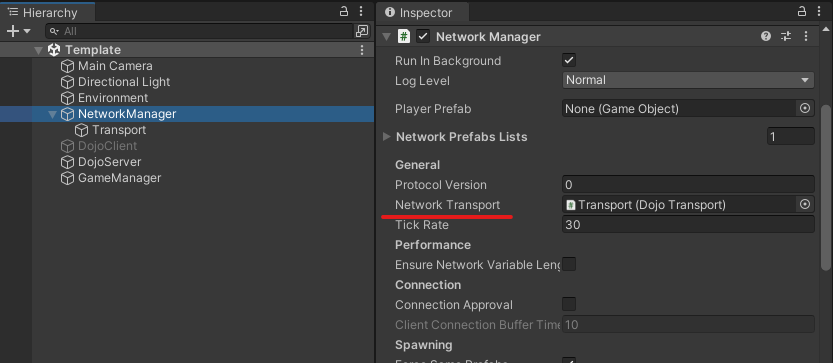

New Game
This section demonstrates some recommended steps to set up a new game environment in Dojo.
Game Folder
In Unity editor, create the following folder structure for the game.
Create a scene file under Scenes folder and double click it.
Scene Setup
Now from the hierarchy panel, create following empty game objects:
The Environment object will contain all static game objects in the scene. NetworkManager is preserved for Unity's netcode system. DojoClient and DojoServer are two components that serve as the basic layer for establishing a connection with the Nakama server. The GameManager object will hold any scripts specific to the game.
Nakama
For multiplayer networking to function, you'll need to establish a connection with the Nakama server. This can be achieved by configuring the DojoConnection script from the Dojo package for both the server and client components.
To get started, select the DojoClient and add the DojoConnection component script via the Inspector panel. Ensure that the "Is Client" checkbox is ticked.
Do the same for DojoServer object, except that "Is Client" is not ticked. Now disable DojoClient and this game will run in server mode in the editor.
Netcode
Now that the game is able to connect to the Nakama server, it is recommended to setup Unity netcode as well to handle game state synchronizations automatically.
Start by creating a child empty game object called Transport within the NetworkManager object. This object will hold the customized DojoTransport that has been built for Unity netcode integration.
Next, attach the NetworkManager component script from Unity netcode to the NetworkManager object and the DojoTransport script from Dojo to the Transport object.
Then, drag the Transport game object to the "Network Transport" entry in the NetworkManager object.

Lastly, attach the DojoNetcodeHelper script component to the NetworkManager object.
The above steps enables Unity netcode to funtion by utilizing the Nakama client-client connections as the underlying transport layer.
User Interface
Dojo includes a user-friendly interface that human players can easily interact with.
First, locate the DojoMenu prefab from the folder "Dojo/UI".
Then, drag the prefab into the scene and place at the bottom of the hierarchy.

Configurations
The last step is to setup configuration files that allow the game to connect with Nakama server and build successfully.
Nakama Configs
Simply right-click within the Configs folder and select "Create/Dojo/Nakama Match Configurations" to create a Nakama configuration file.
To configure your game, simply click on the config file and adjust the "Game Tag" and "Max Num Players" in the inspector panel to match the specifications of your game.
Finally, drag the file into DojoClient and DojoServer script components.

Build Configs
Dojo provides easy building scripts to help build the game in both server and client mode for multiple platforms.
Same as Nakama config file, right-click in Configs folder and select "Create/Dojo/BuilderConfig" to create a build configuration file. Rename the file by the name of your game. Then click the file and fill in the values in inspector panel.
"Scene Path" is the relative path to the scene file from Unity root folder. In this example, it is the following:
"Scene Name" will be the unique game name. "Output Path" is the output folder path to store all build artifacts. By default, the output path is ../Builds.
Finally, the "Dojo Server Name" and "Dojo Client Name" are the names of the game objects. In this case, DojoServer and DojoClient.
Finally, add the build config file to the DojoBuilder list from the Unity editor.